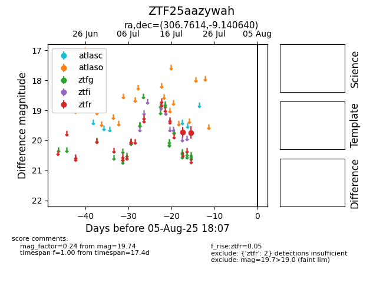

Target ZTF25aazywah at 2025-08-05 18:07, see:
FINK: fink-portal.org/ZTF25aazywah
Lasair: lasair-ztf.lsst.ac.uk/objects/ZTF25aazywah
ALeRCE: alerce.online/object/ZTF25aazywah
alt names
ZTF25aazywah (ztf,fink)
coordinates:
equatorial (ra, dec) = (306.7614,-9.14064)
galactic (l, b) = (35.5342,-25.36960)
photometry
last ztfr=19.74
2 ztfr detections
